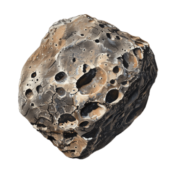

SUB
L
UNA
— login —
NAME
(optional)
DATE OF BIRTH
TIME OF BIRTH
AM
BIRTH CITY
CURRENT LOCATION
◎
LOAD RECENT
START
v1.0

0
N
AVIGATION
↺
LOGOUT
NAV COMPUTER
›_
SET
reading frequencies…
—
—
loading…
▾
SUBRADIO
L
▾
VOL
·
current ➣
·
—
loading…
update location to scan stations
STAR CHART